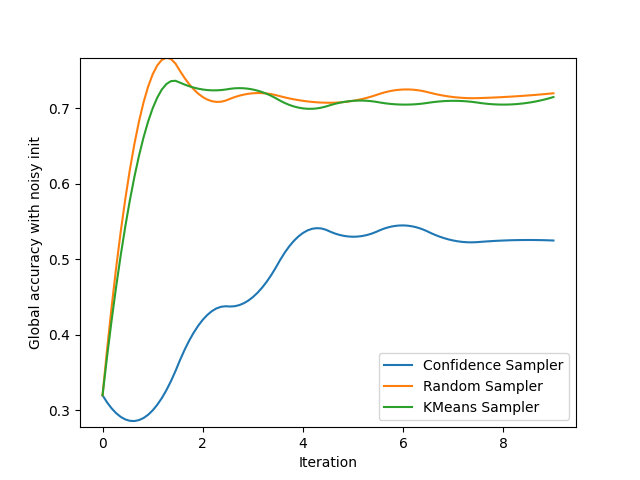

Note
Click here to download the full example code
Noisy boundary¶
Can a noisy boundary tamper with an active learning process? For this test, we select a very simple classification problem. However, this problem is made more difficult by the existence of a noisy boundary where samples are indistinguishable from each other. Let us see if this samplers fall for this “honey pot”.
from copy import deepcopy
import numpy as np
from sklearn.datasets import make_blobs
from sklearn.linear_model import LogisticRegression
from sklearn.metrics import accuracy_score
from matplotlib import pyplot as plt
from cardinal.utils import ActiveLearningSplitter
from cardinal.uncertainty import ConfidenceSampler
from cardinal.random import RandomSampler
from cardinal.clustering import KMeansSampler
from cardinal.plotting import smooth_lines
We simulate two classes. Each class is composed of two blobs. One is clearly distinct for each class, and one is located in a very noisy areas where classes mix with each other.
seed = 2
X_noisy, y_noisy = make_blobs([250, 250], centers=[(0, 0), (0, 0)], cluster_std=[0.3, 0.3], random_state=seed)
X_large, y_large = make_blobs([250, 250], centers=[(-4, 0), (4, 0)], cluster_std=[2, 2], random_state=seed)
X_large[:, 1] *= 5
batch_size = 10
clf = LogisticRegression()
X = np.vstack([X_noisy, X_large])
y = np.hstack([y_noisy, y_large])
We now create the active learning experiment. We use cardinal’s splitter to handles indices. For the initialisation, We sample data in all blobs.
init_spl = ActiveLearningSplitter(X.shape[0], test_size=0.2, shuffle=True, stratify=y, random_state=seed)
init_random_spl = deepcopy(init_spl)
np.random.seed(seed)
init_random_spl.add_batch(np.hstack([
np.random.choice(np.where(y[init_spl.train] == 0)[0], size=batch_size),
np.random.choice(np.where(y[init_spl.train] == 1)[0], size=batch_size),
]))
init_noisy_spl = deepcopy(init_spl)
init_noisy_spl.add_batch(np.hstack([
np.where(y[init_spl.train] == 0)[0][:batch_size],
np.where(y[init_spl.train] == 1)[0][:batch_size],
]))
plt.scatter(X[:, 0], X[:, 1], c=['C{}'.format(i) for i in y], alpha=.3)
plt.scatter(X[init_random_spl.selected, 0], X[init_random_spl.selected, 1], facecolors='none', edgecolors='r', linewidth=2, label='Random init batch')
plt.scatter(X[init_noisy_spl.selected, 0], X[init_noisy_spl.selected, 1], facecolors='none', edgecolors='b', linewidth=2, label='Noisy init batch')
plt.legend()
plt.axis('off')
plt.show()
This function runs the experiment. It is a class active learning setting.
def evaluate(name, sampler, init_spl, ax):
spl = deepcopy(init_spl)
g_acc = []
for _ in range(10):
clf.fit(X[spl.selected], y[spl.selected])
sampler.fit(X[spl.selected], y[spl.selected])
spl.add_batch(sampler.select_samples(X[spl.non_selected]))
g_acc.append(accuracy_score(y[spl.test], clf.predict(X[spl.test])))
ax.plot(np.arange(10), g_acc, label=name)
We create a figure to track both the global accuracy with random and noisy initialization and display the results for 3 very common samplers.
plt.figure()
gr_ax = plt.gca()
plt.ylabel('Global accuracy with random init')
plt.xlabel('Iteration')
plt.figure()
gn_ax = plt.gca()
plt.ylabel('Global accuracy with noisy init')
plt.xlabel('Iteration')
evaluate('Confidence Sampler', ConfidenceSampler(clf, batch_size=batch_size, assume_fitted=True), init_random_spl, gr_ax)
evaluate('Random Sampler', RandomSampler(batch_size=batch_size, random_state=0), init_random_spl, gr_ax)
evaluate('KMeans Sampler', KMeansSampler(batch_size=batch_size), init_random_spl, gr_ax)
gr_ax.legend()
smooth_lines(axis=gr_ax, k=2)
evaluate('Confidence Sampler', ConfidenceSampler(clf, batch_size=batch_size, assume_fitted=True), init_noisy_spl, gn_ax)
evaluate('Random Sampler', RandomSampler(batch_size=batch_size, random_state=0), init_noisy_spl, gn_ax)
evaluate('KMeans Sampler', KMeansSampler(batch_size=batch_size), init_noisy_spl, gn_ax)
gn_ax.legend()
smooth_lines(axis=gn_ax, k=2)
plt.show()
- 
Total running time of the script: ( 0 minutes 1.746 seconds)
Estimated memory usage: 8 MB